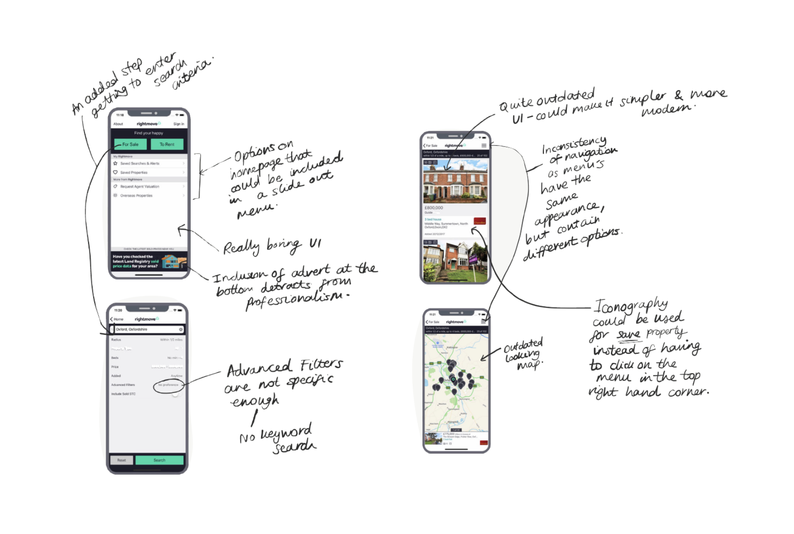
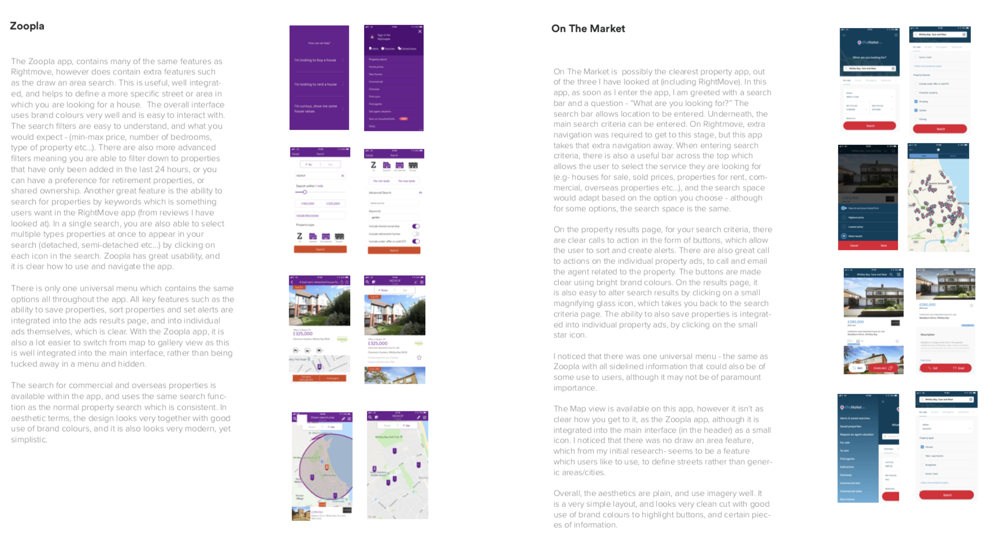
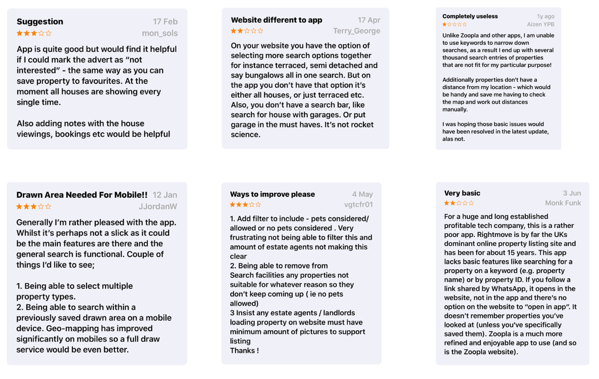
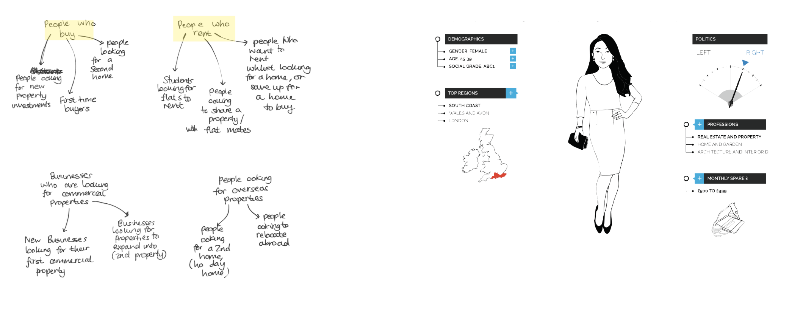

Rebecca Wood
Rightmove Redesign
App design, prototyping, user research
September-November 2018
The Brief
What were the main aims?
In this brief, I needed to choose an interface to redesign. I decided on the Rightmove app, as I felt improvements could be made in all three areas, including usability, accessibility, and with the user interface. we were required to produce a project document, showing our design process, as well as the final product. I also produced two video walkthroughs showing various features of the prototypes that I made using proto.io, and Invision Studio.
Deliverables
A fully functioning prototype that would illustrate my redesign concept
A design document detailing my design process, and how I managed the project
Tools used
Sketch
Invision Studio
Adobe InDesign
Project documents
Project document (download PDF)Prototype (opens in a new tab)
Initial Research
The first thing I did in this project, was to carry out some initial research, which included looking into the current Rightmove app, and understanding what the feelings around the current app were.
Looking into the current app
The first step in my research, was to take a look at the current Rightmove app. I browsed through the app to get myself familiar with it's features, and to identify possible pain points in the user experience, and areas for improvement. 
Competitor research
I then, decided to take a look at some of the main competition so that I could see the features they had, and how they organised information. The main two competitiors are Zoopla and On the Market, so went through each app, and analysed each.
Looking at existing reviews
I also had a look at some reviews of the existing Rightmove app. These gave me great insight into how users felt about the app, and how it could be improved.
I learned a lot from the research phase, and understand more about how the app can be improved. Some of the key issues are:
- Issues with consistency between the app and website - For example; the draw an area feature is avalable on the website when searching for a new property in the map view, but is not available on phone.
- No keyword search
- Cannot search for multiple properties
- Issues with the visual design, and with the filtering features on the app - not enough detail
User research
After conducting some initial research, I moved onto conducting some user research. This was so I could really understand my audience, and the different groups I needed to take into account when redesigning the app.
Identifying the main audiences
To start my research, I identified the main audiences that would use Rightmove, and also looked on YouGov, at the most prominent user group of Rightmove. I found this to be middle aged females.
Personas
After defining the main audiences, I created three personas to ullustrate the main audiences/users
Personas
After defining the main audiences, I created three personas to ullustrate the main audiences/users
Design development
I then moved onto the design phase. Within this phase, I looked more into designing a potential solution, and testing at crucial stages to ensure my designs made sense, and worked well for the end-users.
Initial wireframing
After understanding the current issues with the app, as well as my users – I moved on to do some wire-framing to settle on a good set of designs to test with.
Refinement and user testing
After creating a good amount of wireframes, I went onto to test them. I set some tasks for my sample of users to try and complete. I asked users to point out on my hand drawn screens how they would complete each task. This helped to point out flaws in my design, with relation to navigation and general usability, which helped to save time in the long run.
Digital screens
After tweaking the designs, and carrying out testing – I found some obvious flaws in the designs that I otherwise wouldn’t have noticed. Following user testing, I further tweaked the designs, I went on to digitise the hand drawn wireframes, as can be seen below. I initially created black and white versions on Sketch, and then moved over to Invision Studio (for prototyping purposes), to create coloured versions. I kept further tweaking the designs, and these can be seen below. Not all screens are shown below. To see all screens view my design document.
Final results
I presented the screens I had created to my tutors and classmates, and made some slight improvements based on some feedback. You can see a selection final screens below as well as the interactive prototype I created on Invision Studio.
Final prototype
To view the full prototype, follow this link (opens in a new tab) -
You can also see a walkthrough video on my prototype, which shows the parts of the app that I redesigned.
Reflection
Upon completing the project, I had a think about what I learnt from it, and what I would have improved if I were to complete it again.
What did I learn?
This project was my first app design/prototyping experience, and I felt it went really well. I learnt a lot about the process of researching users, and more technical skills about how to prototype quickly to show new ideas, as well as learning technical skills such as learning how to use Sketch and Invision Studio. I also developed my time management skills, as the project spanned 6 weeks, so it developed my skills at working quickly!
What would I have improved?
If I had more time on the project, or if I were to do the project again, I think I would have tried to mockup more screens for a more in-depth redesign. I also think I would have explored more of the animation options within Invision Studio to really create something unique – although I did explore animation on the map page when searching for properties for sale. I also think I would have carried out more user research if I were to complete the project again. Overall, I was happy with my redesign and believe it does make the app more usable and visually appealing. It also makes it, in my view – more consistent with the Rightmove website.
Next project
Heartwood Hospital